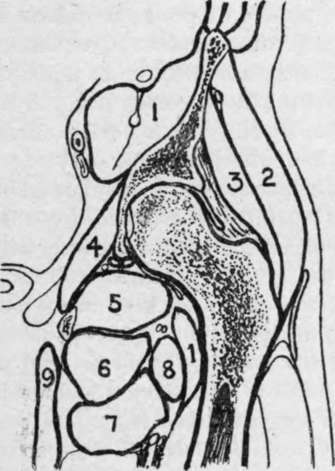

The Hip-Joint
Description
This section is from the book "Surgical Anatomy", by John A. C. MacEwen. Also available from Amazon: Surgical Anatomy.
The Hip-Joint
The Hip-Joint is an excellent example of a ball-and-socket joint. Ilium, ischium, and pubis all enter into the composition of the acetabulum, and are connected by a Y-shaped cartilage, which begins to ossify about the twelfth year, and has disappeared by the sixteenth. Separation, from injury, of the three anatomical portions has occasionally occurred prior to fusion. The articular portion of the acetabulum is roughly horseshoe-shaped, about ¾ inch broad, and rests upon the upper thick portion of the bone, which sends a buttress up in front of the great sacro-sciatic notch to the sacro-iliac articulation, and one down from the lower and back part of the articulation to the tuber ischii. The projecting bony rim of the acetabulum is interrupted below by the cotyloid*'notch, which is bridged by the transverse ligament, transmits the articular vessels and nerves, and leads to the non-articular portion of the acetabulum, which is extremely thin. The weight of the body, however, does not come upon this thin portion, and ordinarily the head of the femur does not come in contact with it in any position. This area is occupied by some fatty tissue, covered by the synovial membrane. It is frequently perforated in hip disease in children, prior to soldering of the component parts, the tubercular debris thus entering the pelvis, passing up under the obturator internus and obturator fascia, and appearing finally above Poupart's ligament. It is also possible for the hip-joint to be invaded through this thin area by pelvic abscess.
The depth of the acetabulum is increased by the cotyloid ligament, which is attached all round to its rim, like a ring or collar, while its free edge projects inward, encircling and grasping the head of the femur, and thus providing a practically air-tight joint. The spherical head of the femur is marked by the depression for the ligamentum teres below and behind the summit, with, beyond it, a smooth flattened area over which the ligament glides. The inner extremity of the ligament is attached to the bone on each side of the cotyloid notch and to the transverse ligament. The head of the femur is separated from the neck by an epiphysis, which appears in the first year, and unites to the shaft about the eighteenth year. Sometimes the articular cartilage of the head is prolonged over the anterior aspect of the neck, and a facet appears on the anterior portion of the acetabular rim, where a position of flexion is frequently assumed, as in tailors and acrobats.
Fig. 37.-Outline Diagram of Longitudinal Section of Hip. (After Braune.)
1. | Ilio-psoas with ant. crural nerve embedded. | 4. | Obturat. int. | 7. | Adduct. brev. |
5. | Obturat. ext. | 8. | Pectineus. | ||
2. | Glut. med. | 6. | Adduct. mag. | 9. | Gracilis. |
3. | Glut. min. |
The neck of the femur forms normally an angle of 125 degrees with the shaft. Its anterior surface lies entirely within the capsule of the joint, but only the inner two-thirds of the posterior surface are intracapsular. The outer one-third of the posterior surface is grooved by the tendon of the obturator externus muscle, which is inserted in a depression at the base of the great trochanter (obturator fossa). The intracapsular portion of the neck of the femur is invested by fibrous bands, reflected from the capsule at its insertion, which are called the cervical ligaments, and extend up to the junction with the head. These extend especially from (a) the middle of the Y-shaped ligament ; (b) from the pectineo-femoral ligament ; and (c) from the upper and back part of the neck.
The great trochanter gives attachment to the gluteus minimus by its anterior margin ; the obturator internus and pyriformis by its upper margin ; the quadratus femoris by its posterior margin, and the gluteus medius by its outer surface, the bursa separating it from the gluteus maximus being situated just below this point. The epiphysis of the great trochanter appears about the second year, and joins the shaft about the eighteenth. The great trochanter has occasionally been separated as an epiphysis. The tip of the great trochanter lies nearly on a level with the spine of the pubis, and ¾ inch below the top of the head of the femur.
The small trochanter gives insertion to the ilio-psoas muscle, and from it three ridges diverge-the posterior intertrochanteric ridge, a ridge along the under surface of the neck to the head, and one running vertically downwards to the linea aspera. The epiphysis of the small trochanter appears about the fourteenth year, and joins the shaft at the eighteenth.
The capsular ligament is attached to the rim of the acetabulum, the cotyloid ligament, and the transverse ligament, at its pelvic extremity, while on the femur it is attached in front to the anterior intertrochanteric line, above to the junction of neck and great trochanter, posteriorly to the junction of the middle and outer thirds of the neck, and interiorly to the lower border of the neck near the small trochanter. This capsular ligament is strengthened by certain limbs, of which the most important is (a) the y-shaped ligament of Bigelow, which is inverted, the tail being inserted into the anterior inferior spine, and the two bands near either extremity of the anterior intertrochanteric line, the thickest part of the ligament being 1/4 inch thick. Extension is limited by this ligament. The thinnest part of the capsular ligament is inside the inner limb of the y-shaped ligament, just under the bursa beneath the ilio-psoas muscle. Sometimes the ligament is wanting here, synovial membrane and bursa being in contact with one another, (b) The pubo-femoral ligament from the ilio-pectineal eminence to the lower aspect of the neck limits abduction, (c) The ischio-femoral ligament from the lower part of the rim of the acetabulum becomes fused in a portion of the capsule posteriorly, called the zona orbicularis. This ligament, with the ligamentum teres, limits adduction when the limb is flexed. When the limb is extended, adduction is limited by the ilio-femoral ligament and upper part of the capsule. Rotation outwards and inwards with the limb extended is also limited by the ilio-femoral ligament, while, when the limb is flexed, outward rotation is limited by the ilio-femoral and teres ligaments, and inward rotation by the ischio-femoral ligament. Flexion is only limited by contact with the trunk, save when the knee is extended, when the hamstring muscles, sciatic nerve, etc., limit it. Additional stability is given the joint by the muscles which lie in contact with it : the gluteus minimus and rectus femoris above ; ilio-psoas in front ; obturator externus below ; and pyriformis, obturator internus and gemelli, and quadratus femoris behind ; while cohesion and atmospheric pressure also aid greatly in holding the surfaces in contact.
Continue to: